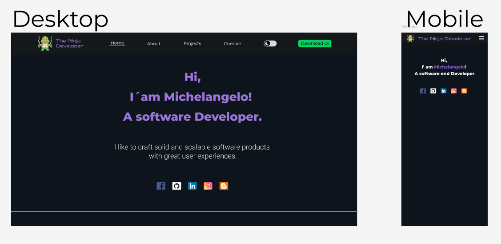

Ninja Developer
This name was selected to reflect a developer with advanced, "ninja-like" coding skills. Its a fun and memorable way to brand a personal portfolio, emphasizing proficiency and mastery in software development.
Site Purpose
The purpose of this portfolio is to showcase my software development skills, projects, and experience. It will serve as a personal brand platform where potential employers, clients, or collaborators can explore your work, skills, and contact details.
Scenarios
- What are some examples of your development work and projects?
- What technologies and programming languages are you proficient in?
Color Schema
Below are two colors and how they are used:
- Primary color: 04D361 Green - Used for Buttons and lines.
- Secondary color: 14181B Light Gray - Used for backgrounds and paragraphs.
Typography
Fonts used on the website:
- Heading font: Montserrat, sans-serif.
- Body font: Roboto, serif.
Wireframe
